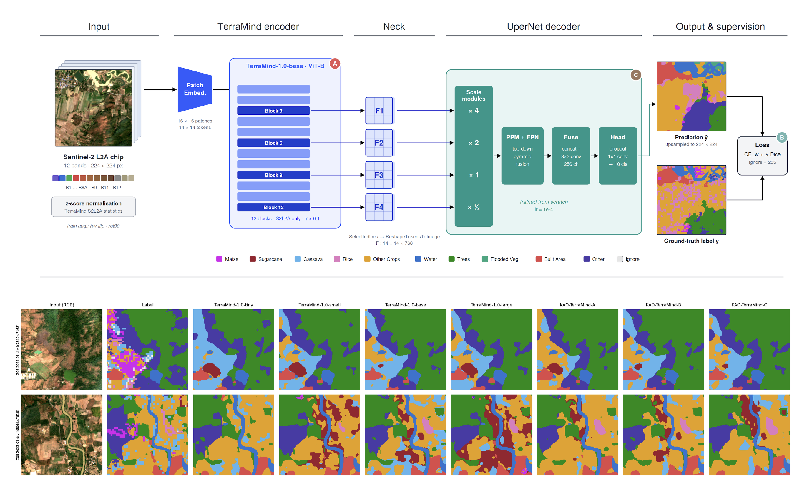
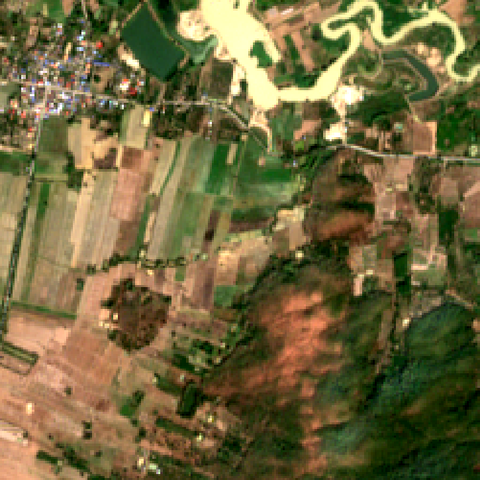
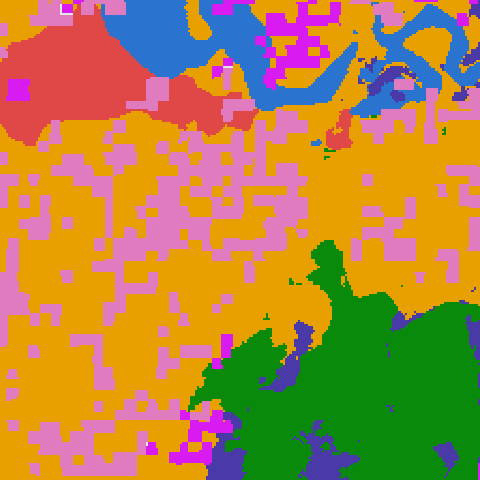
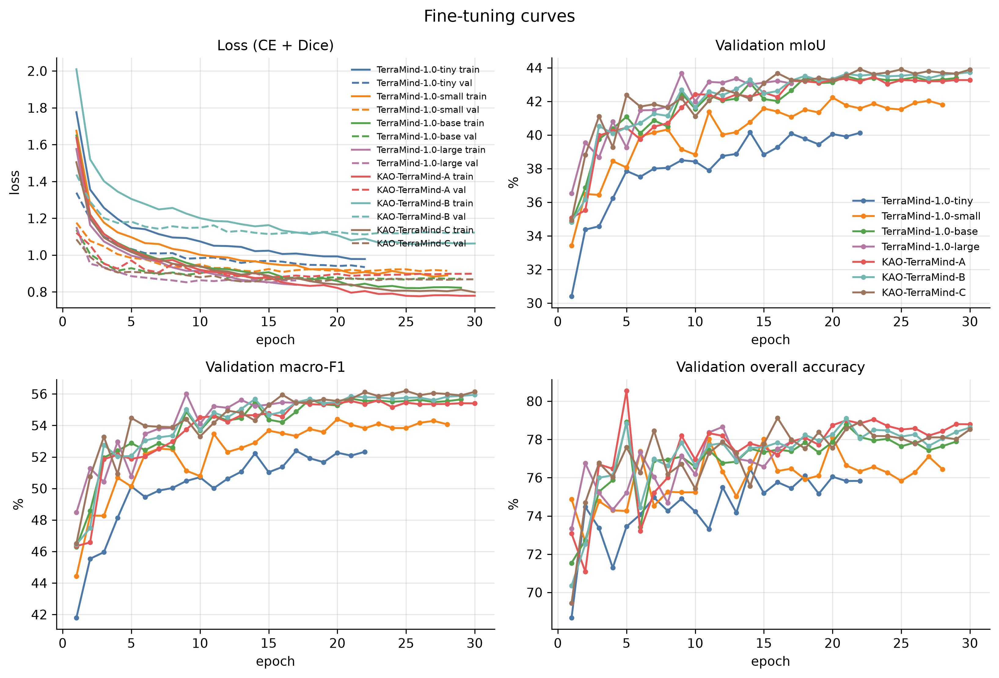
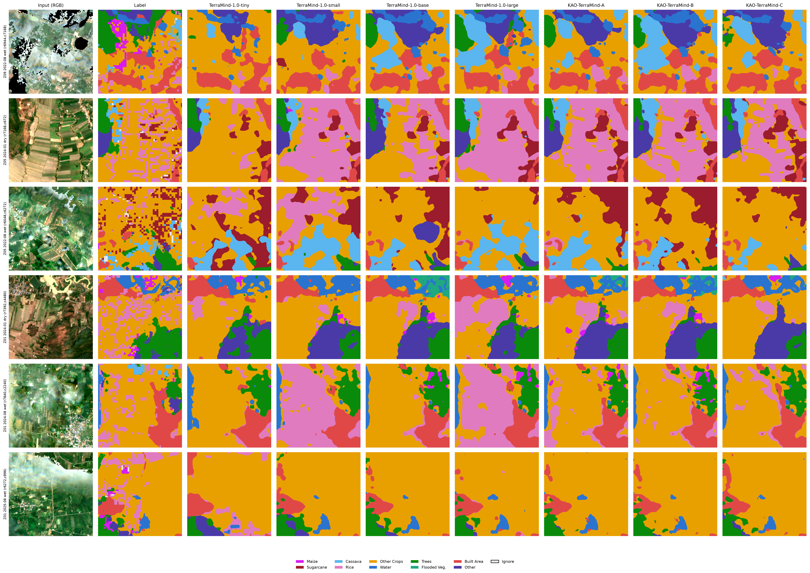
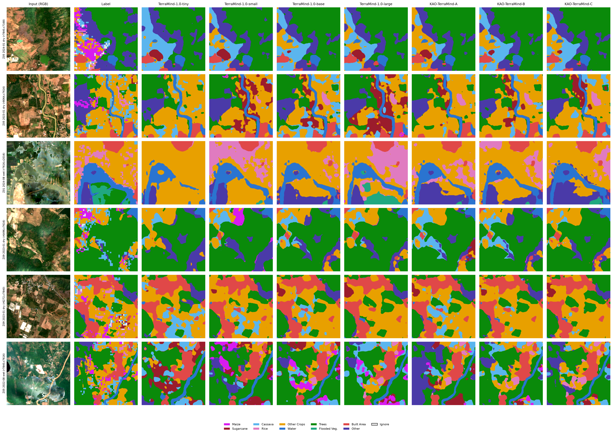

A — Optimisation
Stronger backbone adaptation: backbone lr ×0.3 and weight decay 0.05. Same architecture and cost as TerraMind-base.
Params99.37MGFLOPs57.66Overall acc.78.61%mIoU40.81%Latency15.16 ms
🤗 KAO-TerraMind-ATargeted adaptation of geospatial foundation models for dense prediction — a family of three pretrained variants built on TerraMind, tuned for land-cover segmentation from Earth observation imagery.
By Teerapong Panboonyuen (Kao) · Dataset supported by GISTDA, Thailand
Geospatial foundation models such as TerraMind are pre-trained on large multimodal Earth-observation corpora, yet fine-tuning them for single-modality dense prediction often relies on default recipes. We study KAO-TerraMind, three variants of TerraMind-1.0-base that each introduce one controlled change — optimisation (A), objective (B) or decoder (C) — and evaluate them against TerraMind tiny / small / base / large under identical data, seed and schedule.
On a 10-class crop and land-cover benchmark built from Sentinel-2 L2A imagery over Thailand, KAO-TerraMind-C reaches 41.13% mIoU and 78.90% overall accuracy, ahead of TerraMind-large (40.13% mIoU) while using about 38% of its parameters. Because every variant differs from the base model by a single factor, each gain can be attributed.
A 12-band Sentinel-2 L2A chip is tokenised and encoded by TerraMind-1.0-base; features from four transformer blocks are reshaped into a pyramid and decoded by UperNet into a 10-class map. Variants A, B and C each modify exactly one component (badges in the figure).

| Variant | Component | Change (default → ours) | Rationale |
|---|---|---|---|
| KAO-TerraMind-A | Optimisation | backbone lr ×0.1 → ×0.3 · weight decay 0.01 → 0.05 | Adapt the pre-trained encoder more strongly to the target domain. |
| KAO-TerraMind-B | Objective | Dice weight λ 0.5 → 1.0 (CE with √inverse-frequency class weights + Dice) | Emphasise overlap for rare crop classes. |
| KAO-TerraMind-C | Decoder | channels 256 → 512 · dropout 0.1 → 0.2 · taps blocks 3·6·9·12 → 4·7·10·12 | Wider UperNet with deeper-biased features. |
All other settings are shared: seed 42, 30 epochs, batch size 16, class-balanced sampler and identical train / validation / test chips.
Experiments use a 10-class crop and land-cover dataset over Thailand, supported by the Geo-Informatics and Space Technology Development Agency (GISTDA). Sentinel-2 L2A scenes are cut into 224 × 224 chips with all 12 spectral bands, covering dry-season (January) and wet-season (August) scenes across several zones, and split spatially into train, validation and test sets.


The four crop classes (maize, sugarcane, cassava, rice) are rare and visually similar, which motivates the class-weighted, Dice-augmented objective used in variant B.
Each variant starts from TerraMind-1.0-base and changes a single factor, so gains are attributable. All three are evaluated against the original TerraMind tiny / small / base / large checkpoints under identical conditions.
Stronger backbone adaptation: backbone lr ×0.3 and weight decay 0.05. Same architecture and cost as TerraMind-base.
Stronger overlap term (Dice weight 1.0) for rare crop classes. Same architecture as A; improves mIoU, F1 and mAP over A.
Wider UperNet (512 channels), dropout 0.2 and deeper feature taps. Highest mIoU, accuracy, F1, kappa and mAP of every model tested, with about 38% of TerraMind-large’s parameters.
All models were fine-tuned and tested on the same 13,974 chips, Tesla T4, fp16 autocast. Best value per column is marked in green; KAO-TerraMind rows are shaded.
Table 1. Test-set comparison of TerraMind-1.0 (tiny, small, base, large) and KAO-TerraMind-A/B/C: model cost, segmentation and classification metrics, speed, memory and training time (full metrics: metrics_summary.csv).
Summary. KAO-TerraMind-C reaches 41.13% mIoU and 78.90% overall accuracy, ahead of TerraMind-large (40.13% mIoU, 76.34% OA) while using about 38% of its parameters and running at 132.5 vs 92.2 img/s. Its wider decoder roughly doubles GFLOPs relative to TerraMind-base (118.06 vs 57.66) and lowers throughput (132.5 vs 245.8 img/s) in exchange for +0.31 mIoU and +0.46 OA.
Click any figure to zoom in at full resolution.



If you use KAO-TerraMind, please cite both the adaptation work and the original TerraMind paper.
@article{panboonyuen2026kaoterramind,
title = {KaoTerraMind: Targeted Adaptation of Geospatial Foundation Models for Dense Prediction},
author = {Panboonyuen, Teerapong},
year = {2026},
note = {Manuscript in preparation for submission to CVPR 2027},
url = {https://github.com/kaopanboonyuen/KAO-TerraMind}
}@inproceedings{jakubik2025terramind,
title={Terramind: Large-scale generative multimodality for earth observation},
author={Jakubik, Johannes and Yang, Felix and Blumenstiel, Benedikt and Scheurer, Erik and Sedona, Rocco and Maurogiovanni, Stefano and Bosmans, Jente and Dionelis, Nikolaos and Marsocci, Valerio and Kopp, Niklas and others},
booktitle={2025 IEEE/CVF International Conference on Computer Vision (ICCV)},
pages={7383--7394},
year={2025},
organization={IEEE}
}